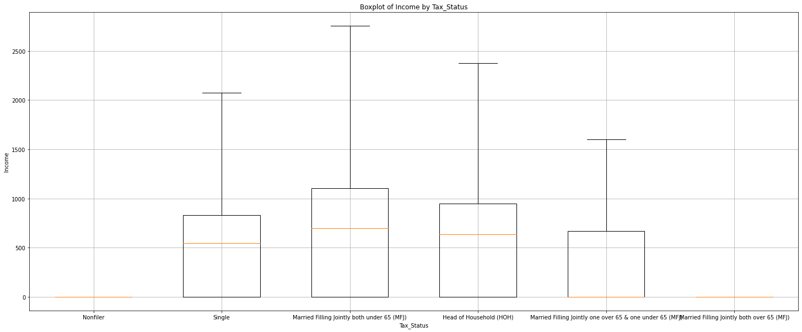
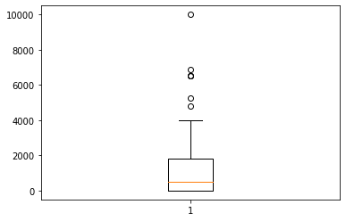
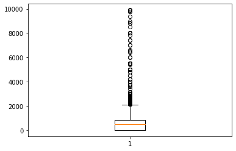
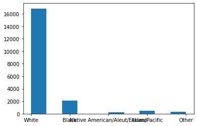

import pandas as pd
import numpy as np
import matplotlib.pyplot as plttrain = pd.read_csv('./train.csv')
tra<class 'pandas.core.frame.DataFrame'>
RangeIndex: 20000 entries, 0 to 19999
Data columns (total 23 columns):
# Column Non-Null Count Dtype
--- ------ -------------- -----
0 ID 20000 non-null object
1 Age 20000 non-null int64
2 Gender 20000 non-null object
3 Education_Status 20000 non-null object
4 Employment_Status 20000 non-null object
5 Working_Week (Yearly) 20000 non-null int64
6 Industry_Status 20000 non-null object
7 Occupation_Status 20000 non-null object
8 Race 20000 non-null object
9 Hispanic_Origin 20000 non-null object
10 Martial_Status 20000 non-null object
11 Household_Status 20000 non-null object
12 Household_Summary 20000 non-null object
13 Citizenship 20000 non-null object
14 Birth_Country 20000 non-null object
15 Birth_Country (Father) 20000 non-null object
16 Birth_Country (Mother) 20000 non-null object
17 Tax_Status 20000 non-null object
18 Gains 20000 non-null int64
19 Losses 20000 non-null int64
20 Dividends 20000 non-null int64
21 Income_Status 20000 non-null object
22 Income 20000 non-null int64
dtypes: int64(6), object(17)
memory usage: 3.5+ MBdata = train_ = train.copy()set(train_.Tax_Status{'Head of Household (HOH)',
'Married Filling Jointly both over 65 (MFJ)',
'Married Filling Jointly both under 65 (MFJ)',
'Married Filling Jointly one over 65 & one under 65 (MFJ)',
'Nonfiler',
'Single'}import matplotlib.pyplot as plt
# 다섯 개의 Tax_Status 값
tax_statuses = train['Tax_Status'].unique()
# 다섯 개의 Tax_Status 값에 대한 박스플롯 그리기
plt.figure(figsize=(25,10)) # 그래프의 크기 설정
for status in tax_statuses:
# 각 Tax_Status 값에 해당하는 데이터의 소득 데이터 추출
income_data = train[train['Tax_Status'] == status]['Income']
# 박스플롯 그리기
plt.boxplot(income_data, positions=[tax_statuses.tolist().index(status) + 1], widths=0.6, showfliers=False)
# 그래프 제목 설정
plt.title('Boxplot of Income by Tax_Status')
# x축 레이블 설정
plt.xlabel('Tax_Status')
# y축 레이블 설정
plt.ylabel('Income')
# x축 눈금 레이블 설정
plt.xticks(range(1, len(tax_statuses) + 1), tax_statuses)
# 그리드 표시
plt.grid(True)
# 그래프 표시
plt.show()
om = train_.loc[train_['Income_Status'] == "Over Median"]
um = train_.loc[train_['Income_Status'] == "Under Median"]
plt.boxplot(om['Income']){'whiskers': [<matplotlib.lines.Line2D at 0x7fe94cb85820>,
<matplotlib.lines.Line2D at 0x7fe94cb85ac0>],
'caps': [<matplotlib.lines.Line2D at 0x7fe94cb85d60>,
<matplotlib.lines.Line2D at 0x7fe94cb0c040>],
'boxes': [<matplotlib.lines.Line2D at 0x7fe94cbedcd0>],
'medians': [<matplotlib.lines.Line2D at 0x7fe94cb0c2e0>],
'fliers': [<matplotlib.lines.Line2D at 0x7fe94cb0c580>],
'means': []}
plt.boxplot(um['Income']){'whiskers': [<matplotlib.lines.Line2D at 0x7fe94cb45280>,
<matplotlib.lines.Line2D at 0x7fe94cb45520>],
'caps': [<matplotlib.lines.Line2D at 0x7fe94cb457c0>,
<matplotlib.lines.Line2D at 0x7fe94cb45a60>],
'boxes': [<matplotlib.lines.Line2D at 0x7fe94cb3cfa0>],
'medians': [<matplotlib.lines.Line2D at 0x7fe94cb45d00>],
'fliers': [<matplotlib.lines.Line2D at 0x7fe94cb45fa0>],
'means': []}
set(train.Income_Status){'Over Median', 'Under Median', 'Unknown'}train['Working_Week (Yearly)']0 4
1 52
2 52
3 52
4 52
..
19995 52
19996 12
19997 52
19998 0
19999 52
Name: Working_Week (Yearly), Length: 20000, dtype: int64len(train.loc[train['Working_Week (Yearly)']==0])4720train_ = train.copy()
train_ = train_[train_['Working_Week (Yearly)'] != 0]np.median(train_.Dividends + train_.Gains + train_.Losses + (train_.Income) * (train_['Working_Week (Yearly)'])*24*7)4892160.0train_['status'] = train_.Dividends + train_.Gains + train_.Losses + (train_.Income) * (train_['Working_Week (Yearly)'])*24*7train_[['status','Income_Status']]| status | Income_Status | |
|---|---|---|
| 0 | 285600 | Unknown |
| 1 | 0 | Under Median |
| 2 | 7516371 | Under Median |
| 3 | 7425600 | Under Median |
| 4 | 4979520 | Unknown |
| ... | ... | ... |
| 19993 | 7862400 | Under Median |
| 19995 | 11356800 | Under Median |
| 19996 | 1713600 | Under Median |
| 19997 | 8727264 | Unknown |
| 19999 | 5861856 | Under Median |
15280 rows × 2 columns
train['Working_Week (Yearly)']0 4
1 52
2 52
3 52
4 52
..
19995 52
19996 12
19997 52
19998 0
19999 52
Name: Working_Week (Yearly), Length: 20000, dtype: int64train.columnsIndex(['ID', 'Age', 'Gender', 'Education_Status', 'Employment_Status',
'Working_Week (Yearly)', 'Industry_Status', 'Occupation_Status', 'Race',
'Hispanic_Origin', 'Martial_Status', 'Household_Status',
'Household_Summary', 'Citizenship', 'Birth_Country',
'Birth_Country (Father)', 'Birth_Country (Mother)', 'Tax_Status',
'Gains', 'Losses', 'Dividends', 'Income_Status', 'Income'],
dtype='object')income = list(train.Income)
len([ i for i in income if i == 0])8697train[['Income_Status', 'Income']]| Income_Status | Income | |
|---|---|---|
| 0 | Unknown | 425 |
| 1 | Under Median | 0 |
| 2 | Under Median | 860 |
| 3 | Under Median | 850 |
| 4 | Unknown | 570 |
| ... | ... | ... |
| 19995 | Under Median | 1300 |
| 19996 | Under Median | 850 |
| 19997 | Unknown | 999 |
| 19998 | Under Median | 0 |
| 19999 | Under Median | 671 |
20000 rows × 2 columns
train.Gains0 0
1 0
2 3411
3 0
4 0
...
19995 0
19996 0
19997 0
19998 0
19999 0
Name: Gains, Length: 20000, dtype: int64set(train.Race){'Asian/Pacific', 'Black', 'Native American/Aleut/Eskimo', 'Other', 'White'}plt.hist(list(train.Race))(array([16845., 0., 2122., 0., 0., 226., 0., 511.,
0., 296.]),
array([0. , 0.4, 0.8, 1.2, 1.6, 2. , 2.4, 2.8, 3.2, 3.6, 4. ]),
<BarContainer object of 10 artists>)
train.Race0 White
1 White
2 Black
3 White
4 White
...
19995 White
19996 White
19997 White
19998 White
19999 White
Name: Race, Length: 20000, dtype: object